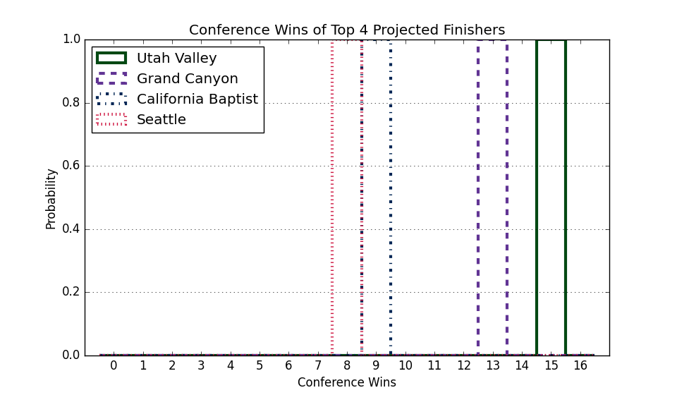

This Week's Games
| Date | Away | W Prob, Pred Score | Home | |||
|---|---|---|---|---|---|---|
| Nov. 28 | Southern Utah | 12.0% | 69 | 84 | 88.0% | Robert Morris |
| Nov. 29 | California Baptist | 60.9% | 69 | 66 | 39.1% | Oregon St. |
| Nov. 29 | UC Riverside | 47.4% | 72 | 73 | 52.6% | Utah Tech |
| Nov. 29 | Stetson | 57.5% | 77 | 75 | 42.5% | Southern Utah |
| Nov. 29 | Stephen F. Austin | 40.5% | 69 | 72 | 59.5% | UT Arlington |
| Dec. 01 | California Baptist | 19.5% | 68 | 78 | 80.5% | Colorado |
| Dec. 01 | Tarleton St. | 14.6% | 65 | 78 | 85.4% | Cincinnati |
| Dec. 02 | Abilene Christian | 22.3% | 64 | 72 | 77.7% | Pepperdine |
| Dec. 02 | UT Arlington | 40.4% | 76 | 79 | 59.6% | Arkansas St. |
| Dec. 03 | California Baptist | 9.9% | 65 | 81 | 90.1% | BYU |
| Dec. 03 | Utah Tech | 4.7% | 60 | 81 | 95.3% | Santa Clara |
| Dec. 03 | Utah Valley | 19.8% | 69 | 79 | 80.2% | San Diego St. |